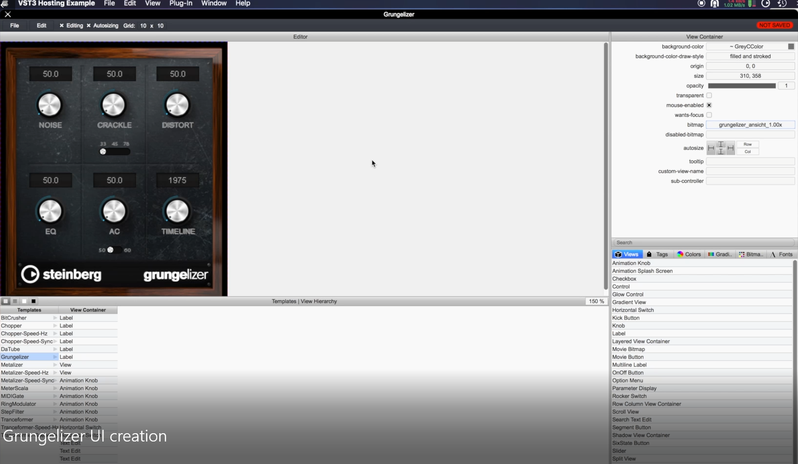
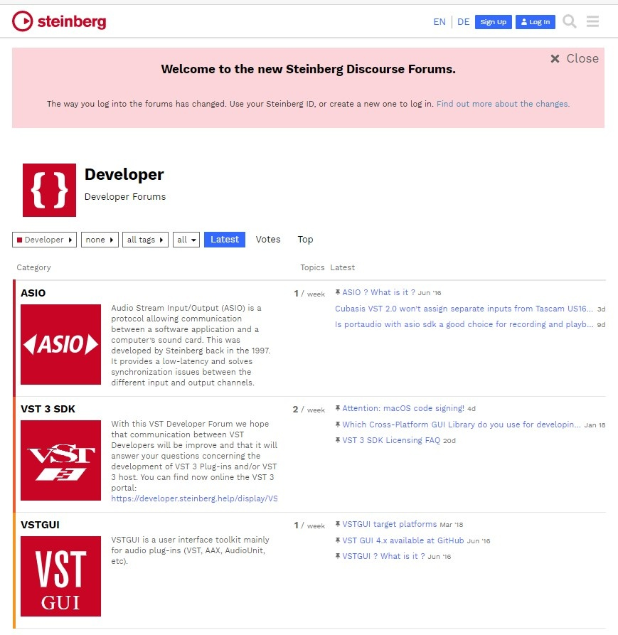
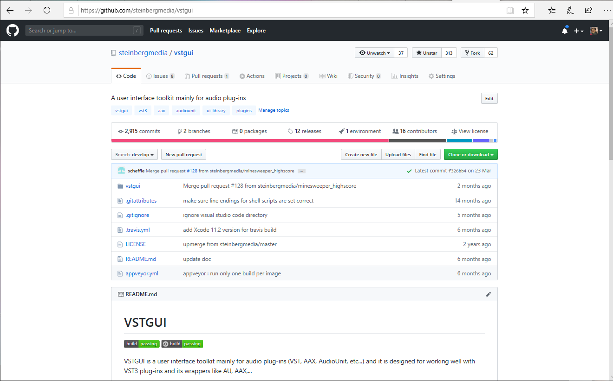

/ VST Home / What is the VST SDK?
VSTGUI
On this page:
Related pages:
Introduction
This is a user interface toolkit primarily designed for audio plug-ins (VST®, AudioUnit®, AAX®, etc.). Based on the XML definition of the plug-in UI, VSTGUI includes an embedded editor (UIDescription Editor) that allows developers to create plug-in UI interface through drag-and-drop of UI element.
Originally developed in-house by Steinberg Media Technologies around 1998 for their first VST plug-ins, VSTGUI was later included as binary libraries to the official VST SDK. Since May 2003, VSTGUI has been open source and is now hosted on GitHub https://github.com/steinbergmedia/vstgui.
The last official release of VSTGUI is always included in the VST SDK.

Example of the VSTGUI UIDescription Editor (embedded editing WYSIWYG)
Check the folder vstgui4 of the SDK!
VSTGUI Forum
Visit Steinberg's VST Developer Forum in order to get help with development, submit bug reports, request new features and connect to other VSTGUI developers:

VSTGUI on GitHub

https://github.com/steinbergmedia/vstgui
VSTGUI License
BSD style
VSTGUI LICENSE
(c) Steinberg Media Technologies, All Rights Reserved
Redistribution and use in source and binary forms, with or without modification,
are permitted provided that the following conditions are met:
* Redistributions of source code must retain the abovecopyright notice,
this list of conditions and the following disclaimer.
* Redistributions in binary form must reproduce the above copyright notice,
this list of conditions and the following disclaimer inthe documentation
and/or other materials provided with the distribution.
* Neither the name of the Steinberg Media Technologies northe names of its
contributors may be used to endorse or promote productsderived from this
software without specific prior written permission.
THIS SOFTWARE IS PROVIDED BY THE COPYRIGHT HOLDERS AND CONTRIBUTORS "AS IS" AND
ANY EXPRESS OR IMPLIED WARRANTIES, INCLUDING, BUT NOT LIMITEDTO, THE IMPLIED
WARRANTIES OF MERCHANTABILITY AND FITNESS FOR A PARTICULAR PURPOSE ARE DISCLAIMED.
IN NO EVENT SHALL THE COPYRIGHT OWNER OR CONTRIBUTORS BELIABLE FOR ANY DIRECT,
INDIRECT, INCIDENTAL, SPECIAL, EXEMPLARY, OR CONSEQUENTIAL DAMAGES (INCLUDING,
BUT NOT LIMITED TO, PROCUREMENT OF SUBSTITUTE GOODS ORSERVICES; LOSS OF USE,
DATA, OR PROFITS; OR BUSINESS INTERRUPTION) HOWEVER CAUSEDAND ON ANY THEORY OF
LIABILITY, WHETHER IN CONTRACT, STRICT LIABILITY, OR TORT (INCLUDING NEGLIGENCE
OR OTHERWISE) ARISING IN ANY WAY OUT OF THE USE OF THISSOFTWARE, EVEN IF ADVISED
OF THE POSSIBILITY OF SUCH DAMAGE.
Tutorials for VSTGUI
Use VSTGUI to design a User Interface
This tutorial explains how to use VSTGUI. VSTGUI comes with a WYSIWYG editor that allows you to createstunning user interfaces for your plug-in.